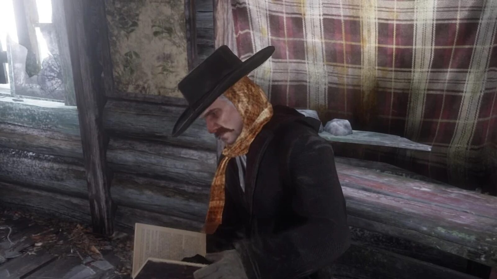
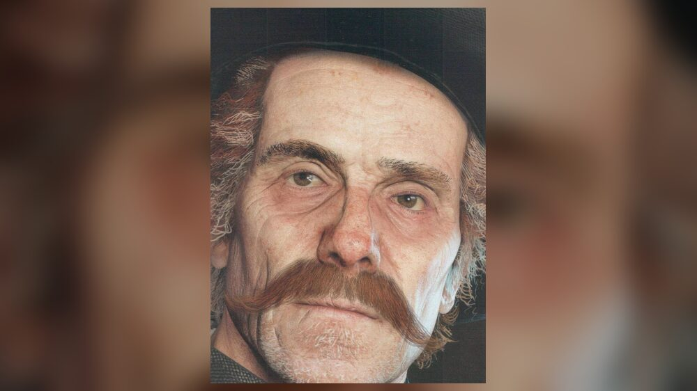
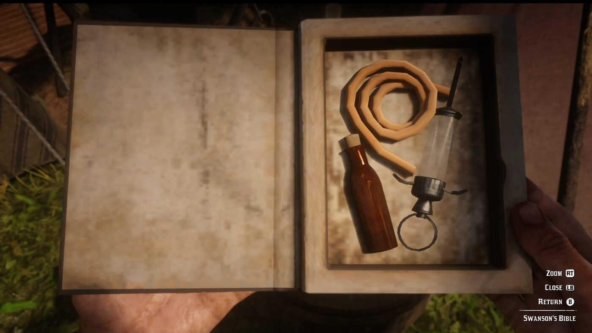

Personnage · Gang Van der Linde
Orville Swanson
Le révérend Orville Swanson est un ancien homme d'Église, membre du gang Van der Linde dans Red Dead Redemption 2. Selon la présentation de Rockstar, s'il n'avait pas jadis sauvé la vie de Dutch, le gang ne l'aurait sans doute pas gardé si longtemps.
Il retrouve la sobriété, quitte le gang avant sa chute, et dirige une église à New York en 1907.
- Affiliation
- Gang Van der Linde
- Rôle
- Ancien homme d'Église
- En 1907
- Pasteur de la First Congregational Church de New York
- Statut
- Vivant en 1907
- Voix
- Sean Haberle
- Jeux
- Red Dead Redemption 2
Biographie
Un révérend déchu
Swanson dit avoir perdu sa vocation, sa foi et sa famille. Il est dépendant à la morphine et à l'alcool. Il a autrefois sauvé la vie de Dutch, ce qui explique que le gang le garde ; le jeu ne dit jamais dans quelles circonstances.
C'est lui qui prononce la toute première réplique du jeu, dans la tempête de neige de la mission d'ouverture, au sujet de Davey Callahan, mourant : Abigail dit qu'il va mourir et qu'il faut s'arrêter quelque part.
Who is Not Without Sin
Au chapitre 2, dans "Who is Not Without Sin", Arthur le retrouve ivre à Flatneck Station, en pleine partie de poker. Il le tire d'une bagarre, puis le dégage du pont ferroviaire de Bard's Crossing, où son pied est coincé dans les rails, juste avant le passage d'un train, et le ramène au camp.
Sobriété et départ
Au chapitre 4, après l'attaque des O'Driscoll sur Shady Belle, Dutch le charge d'enterrer Kieran Duffy avec Charles et Pearson. Après le retour de Guarma, Swanson est sobre. Il quitte le gang à Beaver Hollow.
À la fin de "The Fine Art of Conversation", si l'honneur d'Arthur est bas ou s'il n'a pas fait "Of Men and Angels", c'est Swanson qu'Arthur croise à Emerald Station, sur le point de prendre un train. Sinon, il y rencontre sœur Calderón.
1907
Un article de presse du jeu, "Reverend Swanson Leads NY Church", annonce qu'il est devenu pasteur de la First Congregational Church de New York, après avoir prêché au coin des rues puis servi comme pasteur adjoint dans l'Ohio.
Relations

Dutch van der Linde
Lui doit la vie, raison pour laquelle le gang garde Swanson.

Arthur Morgan
Le sauve à Flatneck Station et sur le pont de Bard's Crossing.

Charles Smith
Enterre Kieran Duffy avec lui.
Conception et interprétation
Swanson est interprété par Sean Haberle, acteur américain qui assure la voix et la capture de mouvement.
Accueil
Le classement du gang publié par Game Informer en décembre 2018 place Swanson 17e, un personnage qui oscille selon le magazine entre le sage et le fou. Dans Polygon, en novembre 2018, Colin Campbell voit en lui le prêtre ivrogne qui se méprise. En avril 2019, GamesRadar cite Swanson et Uncle comme des dépendants que le camp protège et héberge.
Galerie
